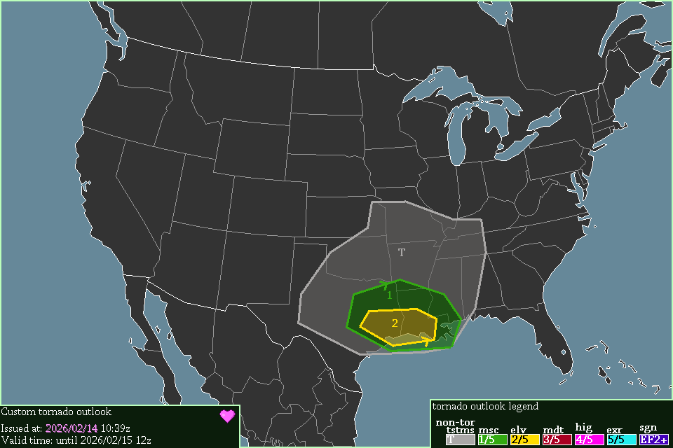

A level 2 elevated risk exists in Texas & Louisiana, starting at 00:00 UTC, 2026/02/15.
Severe thunderstorms are expected surrounding the Elevated risk & into southern Missouri, starting now.
Severe thunderstorms are forming in western Texas, which will move east into Louisiana & Mississippi tonight. They will bring 0-1km SRH of over 200 m²/s² & CAPE of 1000 J/kg. However, the jet-translation-speed is very low, at only 27 knots. Despite this, I still think a tornado or 2 are likely.
-- Cenn Devel, 2026/02/14 10:39z.